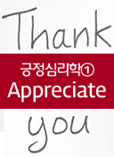

부부관계
스트레스
분노조절
부부는 서로 다른 시간 속에 산다
입만 열면 과거일을 꺼내 트집잡는 아내, 어떻게 해결할 수 있을까
내 아내가 아픈 진짜 이유는?
어깨 통증으로 고생하는 내 아내. 고통을 말끔히 씻어줄 해결책은 없을까?

긍정심리학① Appreciate
행동하는 긍정주의자, 옵티미스트가 되기 위한 첫번째 조건은 감사하기
긍정심리학③ Care
행동하는 긍정주의자, 옵티미스트의 세번째 요건은 Care, 실천이다!
스트레스 받고 살자!
피할 수 없다면 부딪쳐라! 스트레스에 대처하는 현명한 자세에 대해 살펴 본다.
나의 가장 소중한 사람에 대하여
늘 곁에 있어서 지나치기 쉬운 이름, 아내! 아내의 의미를 다시 찾아본다.
만남과 헤어짐 그것이 바로 인생
세월은 가고, 과거는 남는것이라 노래했던 박인환의 '세월이 가면'을 통해 만남과 헤어짐에 대해 알아본다.
자녀의 짐이 되기 싫은데, 현실은?
자식 신세를 질 생각이 없음에도 불구하고, 지원을 받는 이유와 만족도를 알아본다.
중년, 제대로 놀아야 할 때!
열심히 일한 중년, 제대로 놀아야 할 때! 놀이가 필요한 중년에게 '잘 노는 법'을 소개한다.